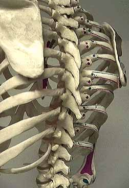

Next: cervical spine
Back: posterior view of the lumbar spine
|

The spinous processes of the thoracic spine project posteriorly and inferiorly. They reach their steepest downward angulation at the midthoracic level, where they overlap with the lamina of the vertebra immediately inferior.
Next: cervical spine Back: posterior view of the lumbar spine |